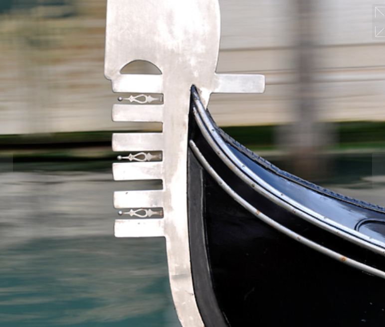
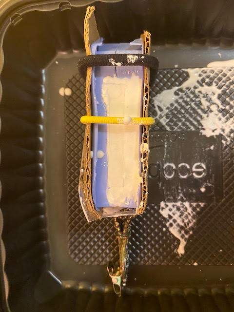

Molding and Casting Part 2!
This project entailed the design and fabrication of a 2-part (silicone) mold. As an outcome, the project required using the silicone mold to cast at least 4 identical parts, and for that last step I decided to cast my parts in hydrostone. I designed my master part in CAD (Rhino) first, then used it to design the 3D printable mold into which I poured the Oomoo 30, and lastly used the silicone mold to cast my hydrostone parts. Below I document the end-to-end process from ideation to final molding and casting of my model, the iconic iron prow of the Venetian gondola.
At the start of my molding and casting project, I searched Thingiverse for inspiration from Italy and landed on this Ferro di prua (iron prow-head of a gondola, the most iconic boat that one can find in Venice). Given that my mother's side of the family all have Venetian roots, this ornament has sentimental value:


To have a physical model of a gondola and iron prow to use for further ideation, I 3D printed these STL files that I found online. I scaled the gondola down by 90% just to have a model that I could hold in one hand for reference, and I scaled down the iron prow as well so that I could get a sense for how I might need to modify the object in order to use it effectively to create a 3D printed mold:

Gondola body STL file
Gondola iron prow STL file
I thought the unique shape of the iron prow would make an interesting molding and casting challenge. My plan was to keep it on the smaller side but to scale it up large (and wide) enough to mitigate breaking the object when later removing it from a mold in later steps. The iron prow head of the gondola is full of symbolism with each element of its design having historical and regional significance to the people of the Veneto region.

I brought the iron prow STL file into Rhino and used it as a departure point to start designing my 3D mold. The original dimensions of the STL file were quite small and some elements of the model were delicate (for instance, the thinner, finger-looking elements pointing in the same direction). For this reason, so I scaled up the design in 3D to approximately 8 cm in length. I also scaled the width of the entire model to approximately 1.6 cm to increase the volume and reduce risk of encountering issues when casting the part in hydrostone in later steps.

Rhino file
When reviewing my model with our fabulous TA, Junchao, he recommended that I consider further reinforcing it by increasing the thickness in some of the more delicate areas of the design to mitigate those from collapsing or breaking. With his brilliant design enhancements incorporated, the reinforced model maintained its original geometry, yet it became much more 3D printing, molding, and casting-friendly!

STL file of mold
As next steps, I went to the university makerspace to 3D print my mold. I exported the model from Rhino as an STL file, but when I loaded the STL file in the Cura slicer software, it flagged an error message related one side of the mold. After consulting with a couple of classmates (Noelle and Sara), I was advised to troubleshoot my model's surfaces to check for any open curves and also check to see if I had inadvertently flipped one side of the mold inside out:
With some help from Sara, I was able to resolve both issues and get my 3D mold ready for slicing and rapid prototyping. The 3D mold printed beautifully with nice, clean edges:
As a next step, I used the 3D printed mold to cast a silicone mold with Oomoo 30:
I let the silicone cure at room temperature for nearly 12 hours before carefully removing it from the 3D printed mold. (Typically, Oomoo 30 only takes about 6 hours to cure, but I wanted to give it some additional time just in case). I was very pleased with the result!
Finally, I prepared my materials to cast my part in hydrostone (hydrostone is a plaster material which contains some concrete, giving it more strength that regular plaster). Based on a suggestion from a classmate, Bailey, I brushed a very light coat of Vaseline on the Oomoo mold before casting the hydrostone to make it easier to remove. I used a silicone kitchen tool to brush it on, which gave me a lot of control when applying Vaseline in all of the tight spaces and corners of the mold.
To seal up the two silicone pieces together tightly, I applied small pieces of transparent packing tape along the mold's edges in a few places and reinforced it with cardboard pieces rubberbanded together to keep it from leaking through any gaps:

As I was hopinng, the hydrostone prototype came out of the mold very easily and very clean with only minor imperfections that could be sanded down in post-processing:
Final STL files used to produce the silicone mold:
Venetian gondola ferro di prua mold - convex registration points
Venetian gondola ferro di prua mold - concave registration points
Resources:
HCDE 533 professor Nadya Peek for the very handy lecture on molding and casting including process tips and recommendations.
Teaching assistant Junchao Yang and classmate, Sara C, for assistance with modeling my master part in Rhino.
Additional thanks to other classmates who provided answers to questions (and encouragement) on Discord: Jessie, Noelle, Jalia, Bailey, Vanessa.
Thingiverse Ferro di prua
Preparing Rhino Projects for the Grasshopper Plugin
How to Cast Hydrostone 101 Using Plaster Cement Casting